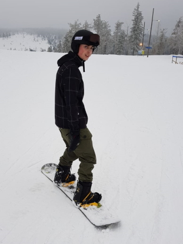

I'm a freshly graduated game designer and producer who loves juicy, crispy and crunchy video games. For job inquiries you can email me.
Born in 1997, I have been playing video games for as long as I can remember. They have been with me in inspiring creativity and curiosity towards how things work from mechanical systems all the way to understanding how us humans work as well.
I pride myself on attempting to understand every side of game development, whether it be production, design, sound, art, programming, QA, you name it. In past projects I have mainly participated as either a producer or designer, but I'm also willing to wield a drawing tablet and a pen or keyboard and Visual Studio as my weapon during development crisis.
When it comes to playing games, I am very much a social gamer. My most enjoyable moments in gaming are beating a tough raid for the first time or playing a heart-poundingly close match of PvP with some friends! I used to play Team Fortress 2 competitively in both UGC and ETF2L leagues in the Highlander format and some of my fondest memories ever have come from those matches. My other favourite aspect of games is customization. If a game gives me the opportunity to shape the way I play, I'll probably be hooked instantly. I love creating the weirdest builds in RPGs!
I have a deep love for game jams. Most of my art and programming experiences come from physically participating at jams at KUAS. Most of the time I pick a filler position to round the team or be a jack-of-all-trades type of developer. Last minute SFX and music are my specialty!
Outside of games, I have a strong background in team sports, mainly in soccer. Recently I have been enjoying disc golf as a healthy addition to jogging and cycling. During the winter my favourite things to do are downhill skiing and snowboarding! I also love to dabble with electronic music and percussive instruments.